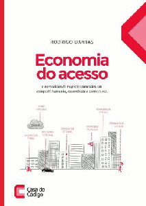

Reflexões geradas pelo livro "Economia do Acesso"
Minhas impressões geradas pelo livro "Economia do Acesso", de Rodrigo Dantas, editado pela Casa do Código.

Eis um livro instigante, que realmente me fez pensar. Não só no que o autor, Rodrigo Dantas, defende e explica, mas nas ideias que ficam martelando minha mente toda vez que me distraio e penso no que li.
O Dantas aponta algumas situações mais diretamente ligadas ao atual momento que vivemos. Mas a leitura do livro me suscitou muita coisa que ocorreu no final do século passado. E que, em minha visão, tem influência em tudo isso.
É, sem sombra de dúvida, um daqueles momentos históricos dos quais podemos dizer: "que tempos!". Tempos fascinantes e que nos chamam à ação. Não só política ou social, mas econômica também, em nossa atividade profissional e empreendedora.
Modernidades
Uma grande virada social e econômica tem ocorrido nos últimos anos. Um de seus aspectos tem um simulacro de posse coletiva de bens. A posse, a propriedade de certos bens, como carros e bicicletas, passa às mãos de empresas ou organizações que se dedicam a ter esses bens em bom estado e disponíveis a quem queira usá-los.
Não o simples aluguel de um carro por uns dias, que já existe há décadas, e que supre outras necessidades. Mas o aluguel de carros por hora, que pode compor uma solução de mobilidade pessoal ou familiar, que abarca o eventual aluguel de um carro por algumas horas, o uso de transporte público, o aluguel de uma bicicleta para chegar mais rápido a um destino nem tão próximo nem tão distante, ou mesmo a contratação de um lugar numa "perua" ou "van" para a condução de crianças à escola.
E as mais emblemáticas dessas situações, são aquelas potenciadas pela tecnologia, possibilitando a prestação de serviços antes não imaginados, como os sistemas SaaS ou aplicativos como UBER.
Neoliberalismo (simpaticamente chamado globalização)
Penso que essa reviravolta econômica tem um pouco a ver com a forte imposição da terceirização pelo movimento neoliberal em todo o mundo. É a junção dialética de uma política deliberada dos grandes grupos econômicos, com princípios de economia solidária, bem como necessidades de receitas mais estáveis, recorrentes, por parte não só de empresas, mas de pessoas, de "profissionais liberais".
Em meu estado de origem, Paraná, acompanhei de perto muito do sofrimento de trabalhadores e pequenas empresas, que por conta de políticas agressivas de terceirização (muitas vezes travestidas de inteligência logística), caíram em situação de miséria.
A coisa era simples: para maior eficiência das montadoras de automóveis - veja, não falamos de fábricas de carros, mas de montadoras - elas passaram a se ocupar principalmente do processo de montagem do carro. As peças, em grande parte, passaram a ser produzidas por outras empresas, empresas menores e locais fundadas por ex-empregados da montadora, com contratos draconianos em relação a prazos e metas, e com garantias apenas para o lado mais forte. E o lado mais fraco, quase sempre se tornou uma empresa de um cliente só, dadas as cláusulas contratuais.
Isso tudo aliado a um forte processo de aumento da automatização, da robotização do trabalho. Esse é o legado cruel do neoliberalismo, fase escabrosa pela qual a humanidade passou especialmente a partir dos anos 1980. Não por acaso, é partir dessa época que o massacrado movimento sindical volta a ter alguma significação social e política.
Então aqui temos, ainda que uma forma crua e danosa à economia, uma forma de serviço recorrente sob demanda.
Economia solidária
Em terras arrasadas, tudo tem que ser reconstruído. Empregos destruídos, salários que não existem mais. Na Argentina ocorreu uma movimentação prática e criativa de como sobreviver a essas situações criadas pelos neoliberais.
Isso engloba desde a simples prática do escambo, aos mais nobres atos de solidariedade humana, e a criação de moedas controladas por pequenos grupos sociais.
Aqui vemos o óbvio, que ocorre em muitos locais: bancos não são indispensáveis.
Receitas recorrentes
No que classifico como "literatura de autoajuda para freelancers", especialmente da área de informática, há um mantra: construa um produto escalável que se venda sozinho, pois suas horas são limitadas.
Ou seja, trabalhar por projetos é instável, por mais organizado e eficiente que alguém seja na sua prospecção e execução. E há um limite muito rígido, que é a quantidade de horas que uma pessoa consegue trabalhar.
Mas se alguém consegue produtizar algo em que seja especialista, e garantir muitos pequenos pagamentos mensais, sua receita estabiliza-se.
E daí?
Com tudo isso em mente, vemos as rápidas e grandiosas transformações econômicas e sociais provocadas pelo que é apresentado no livro.
Vivemos o glamour das startups, vivemos a afronta sofrida pelos bancos, por empresas menores e mais ágeis que se valem de um relacionamento franco e aberto com seus clientes.
Vivemos um momento de racionalização do uso de recursos, um momento de abertura de mercados muito mais amplos, com oferta de produtos e serviços antes restritos apenas às camadas em melhor situação financeira.
Vivemos (no passado) a subversão da indústria musical.
Vivemos (presente) a subversão da indústria de software.
Tudo isso é discutido por todo o livro, com muitos exemplos, muita história, muita opinião, muitas referências.
E esse momento pelo qual estamos vivendo é atentamente observado pelo autor, que atinge esse entendimento não só pela observação do processo histórico, mas especialmente pela sua participação ativa nesse processo, provocando a discussão sobre o que ocorre e comandando uma solução que se insere no núcleo do funcionamento dessa nova economia.
Leitura mais que recomendada.